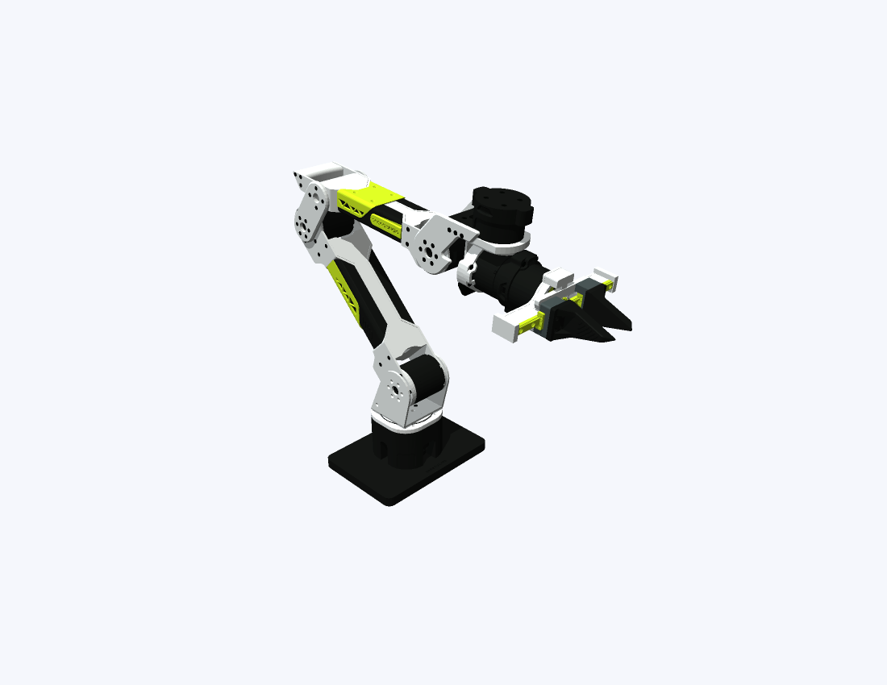
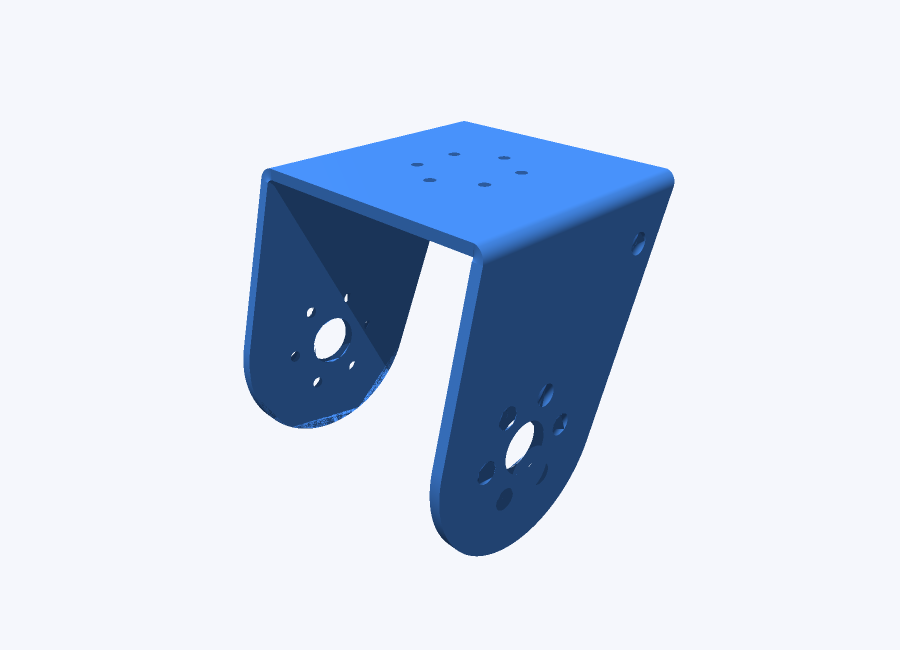

Seeed DevArm CAD workflow
Seeed DevArm: download, import, pose, export and visualize
Each tab below is one complete workflow. Run it from this document's directory:
it obtains the pinned source files through datasets::fetch, imports the real
arm and a precise STEP link, poses the arm, exports both models as glTF, reopens
those exports and renders them here. No separate just cad-assets step or
downloader script is needed. Python and R use the native packages built with
just build-python and just build-r.
The input is Seeed reBot-DevArm
B601-DM, pinned to revision 922c5fa3d8c8919db1847b49166f02fc26c8fdad. The
native downloader verifies all 38 files by size and SHA-256, including the
source license, URDF, 34 visual STL meshes and STEP geometry (about 56 MB). The
explicit cache below is the repository's ignored build/cad-assets/rebot;
omitting the second fetch argument uses the shared configurable dataset cache. A
valid cache works offline; set DATAMUNGE_DATA_OFFLINE=1 to forbid downloads. A
changed cached file raises an error. DATAMUNGE_DATA_MIRROR can supply a mirror
laid out as rebot_devarm/<file basename>.
The arm has seven independent joints. Angles are radians and the gripper coordinate is metres; its right finger follows the URDF mimic relation. The STEP link uses millimetres, so it stays in a separate scene. Exported glTF stores the posed render meshes, placements and colors; keep the URDF to change joints and the STEP source for exact B-rep surfaces. Exporting glTF does not preserve joint constraints or the STEP feature representation. The programs check that the reopened exports retain every object and triangle before rendering them. This example visualizes geometry without commanding hardware.
The source hardware is © 2026 Seeed Studio Co., Ltd., CERN-OHL-W-2.0. The
downloaded LICENSE remains beside the assets. Cached images are included in
this report for viewing before running the code. Newly generated PNGs and
self-contained glTF files stay in this report's local build/ directory; no
image XML, data URIs or model bytes are printed into the results.
#include <dm/dm.hpp>
int main() {
// Download missing source files and verify the complete cache on every run.
const std::filesystem::path assets =
dm::datasets::fetch("rebot_devarm", "../../../build/cad-assets/rebot");
const std::filesystem::path out = "build/cad_cpp";
std::filesystem::create_directories(out);
std::filesystem::create_directories("build/figs");
auto arm =
dm::cad::View::from_urdf((assets /
"Rebot_Arm_description/DM/urdf/ReBot_Arm_DM.urdf").string());
arm.set_joint("joint2", -.8);
arm.set_joint("joint3", -.7);
arm.set_joint("finger_left", .015); // The right finger follows automatically.
arm.save_gltf((out / "rebot_arm.gltf").string());
auto part =
dm::cad::View::from_file((assets /
"hardware/reBot_B601_DM/Metal_Parts/03_Link1.step").string());
part.save_gltf((out / "rebot_link1.gltf").string());
// Import the saved models: the displayed images visualize these exports.
auto saved_arm =
dm::cad::View::from_file((out / "rebot_arm.gltf").string());
auto saved_part =
dm::cad::View::from_file((out / "rebot_link1.gltf").string());
if (saved_arm.object_count() != arm.object_count() ||
saved_arm.triangle_count() != arm.triangle_count() ||
saved_part.object_count() != part.object_count() ||
saved_part.triangle_count() != part.triangle_count())
throw std::runtime_error("Export changed the object or triangle count");
saved_part.size(900, 650);
saved_part.samples(2);
saved_part.light(.5, -1, 2, "#ffffff", 1.2);
saved_part.light(-1, .5, .5, "#dce8ff", .5);
saved_part.render("build/figs/rebot_link1.png");
std::filesystem::create_directories("figures");
std::filesystem::copy_file("build/figs/rebot_link1.png",
"figures/rebot_link1.png",
std::filesystem::copy_options::overwrite_existing);
saved_arm.size(1100, 850);
saved_arm.samples(2);
saved_arm.light(.5, -1, 2, "#ffffff", 1.3);
saved_arm.light(-1, -.5, .5, "#dce8ff", .6);
saved_arm.render("build/figs/rebot_arm.png");
std::println("| Source | Objects | Triangles | Reopened objects | Reopened triangles |\n| --- | ---: | ---: | ---: | ---: |");
std::println("| Posed DevArm | {} | {} | {} | {} |", arm.object_count(),
arm.triangle_count(), saved_arm.object_count(),
saved_arm.triangle_count());
std::println("| STEP link | {} | {} | {} | {} |", part.object_count(),
part.triangle_count(), saved_part.object_count(),
saved_part.triangle_count());
}| Source | Objects | Triangles | Reopened objects | Reopened triangles |
|---|---|---|---|---|
| Posed DevArm | 34 | 430912 | 34 | 430912 |
| STEP link | 1 | 12125 | 1 | 12125 |


Generated models: posed arm and STEP-link mesh. These glTF files contain embedded mesh data and can be opened in a glTF viewer.
from pathlib import Path
import shutil
from pydatamunge import datamunge as dm
# The same native download and SHA-256 verification as the C++ tab.
assets = Path(dm.fetch("rebot_devarm", "../../../build/cad-assets/rebot"))
out = Path("build/cad_python")
out.mkdir(parents=True, exist_ok=True)
Path("build/figs").mkdir(parents=True, exist_ok=True)
arm = dm.CadScene.from_urdf(
str(assets / "Rebot_Arm_description/DM/urdf/ReBot_Arm_DM.urdf")
)
arm.set_joint("joint2", -.8)
arm.set_joint("joint3", -.7)
arm.set_joint("finger_left", .015)
arm.save_gltf(str(out / "rebot_arm.gltf"))
part = dm.CadScene.from_file(
str(assets / "hardware/reBot_B601_DM/Metal_Parts/03_Link1.step")
)
part.save_gltf(str(out / "rebot_link1.gltf"))
# Render the reopened exports, after checking geometry counts.
saved_arm = dm.CadScene.from_file(str(out / "rebot_arm.gltf"))
saved_part = dm.CadScene.from_file(str(out / "rebot_link1.gltf"))
for source, saved in [(arm, saved_arm), (part, saved_part)]:
if (source.object_count(), source.triangle_count()) != (
saved.object_count(), saved.triangle_count()
):
raise RuntimeError("Export changed the object or triangle count")
saved_part.size(900, 650)
saved_part.samples(2)
saved_part.light(.5, -1, 2, "#ffffff", 1.2)
saved_part.light(-1, .5, .5, "#dce8ff", .5)
saved_part.render("build/figs/rebot_link1_python.png")
Path("figures").mkdir(exist_ok=True)
shutil.copyfile(
"build/figs/rebot_link1_python.png", "figures/rebot_link1_python.png"
)
saved_arm.size(1100, 850)
saved_arm.samples(2)
saved_arm.light(.5, -1, 2, "#ffffff", 1.3)
saved_arm.light(-1, -.5, .5, "#dce8ff", .6)
saved_arm.render("build/figs/rebot_arm_python.png")
print(
"| Source | Objects | Triangles | Reopened objects | Reopened triangles |\n| --- | ---: | ---: | ---: | ---: |",
)
for name, source, saved in [
("Posed DevArm", arm, saved_arm), ("STEP link", part, saved_part)
]:
print(
f"| {name} | {source.object_count()} | {source.triangle_count()} | " f"{saved.object_count()} | {saved.triangle_count()} |",
)| Source | Objects | Triangles | Reopened objects | Reopened triangles |
|---|---|---|---|---|
| Posed DevArm | 34 | 430912 | 34 | 430912 |
| STEP link | 1 | 12125 | 1 | 12125 |

Generated models: posed arm and STEP-link mesh. These glTF files contain embedded mesh data and can be opened in a glTF viewer.
suppressPackageStartupMessages(library(datamunger))
# Native downloading, verification and cache layout are shared by all tabs.
assets <- fetch("rebot_devarm", "../../../build/cad-assets/rebot")
out <- "build/cad_r"
dir.create(out, recursive = TRUE, showWarnings = FALSE)
dir.create("build/figs", recursive = TRUE, showWarnings = FALSE)
arm <- CadScene$from_urdf(
file.path(assets, "Rebot_Arm_description/DM/urdf/ReBot_Arm_DM.urdf")
)
invisible(arm$set_joint("joint2", -.8))
invisible(arm$set_joint("joint3", -.7))
invisible(arm$set_joint("finger_left", .015))
invisible(arm$save_gltf(file.path(out, "rebot_arm.gltf")))
part <- CadScene$from_file(
file.path(assets, "hardware/reBot_B601_DM/Metal_Parts/03_Link1.step")
)
invisible(part$save_gltf(file.path(out, "rebot_link1.gltf")))
saved_arm <- CadScene$from_file(file.path(out, "rebot_arm.gltf"))
saved_part <- CadScene$from_file(file.path(out, "rebot_link1.gltf"))
stopifnot(
arm$object_count() == saved_arm$object_count(),
arm$triangle_count() == saved_arm$triangle_count(),
part$object_count() == saved_part$object_count(),
part$triangle_count() == saved_part$triangle_count()
)
invisible(saved_part$size(900L, 650L))
invisible(saved_part$samples(2L))
invisible(saved_part$light(.5, -1, 2, "#ffffff", 1.2))
invisible(saved_part$light(-1, .5, .5, "#dce8ff", .5))
invisible(saved_part$render("build/figs/rebot_link1_r.png"))
dir.create("figures", showWarnings = FALSE)
stopifnot(
file.copy(
"build/figs/rebot_link1_r.png",
"figures/rebot_link1_r.png",
overwrite = TRUE
)
)
invisible(saved_arm$size(1100L, 850L))
invisible(saved_arm$samples(2L))
invisible(saved_arm$light(.5, -1, 2, "#ffffff", 1.3))
invisible(saved_arm$light(-1, -.5, .5, "#dce8ff", .6))
invisible(saved_arm$render("build/figs/rebot_arm_r.png"))
cat(
"| Source | Objects | Triangles | Reopened objects | Reopened triangles |\n| --- | ---: | ---: | ---: | ---: |\n"
)
cat(
sprintf(
"| Posed DevArm | %d | %d | %d | %d |\n",
arm$object_count(),
arm$triangle_count(),
saved_arm$object_count(),
saved_arm$triangle_count()
)
)
cat(
sprintf(
"| STEP link | %d | %d | %d | %d |\n",
part$object_count(),
part$triangle_count(),
saved_part$object_count(),
saved_part$triangle_count()
)
)| Source | Objects | Triangles | Reopened objects | Reopened triangles |
|---|---|---|---|---|
| Posed DevArm | 34 | 430912 | 34 | 430912 |
| STEP link | 1 | 12125 | 1 | 12125 |
figures/rebot_arm_r.pngfigures/rebot_link1_r.pngGenerated models: posed arm and STEP-link mesh. These glTF files contain embedded mesh data and can be opened in a glTF viewer.